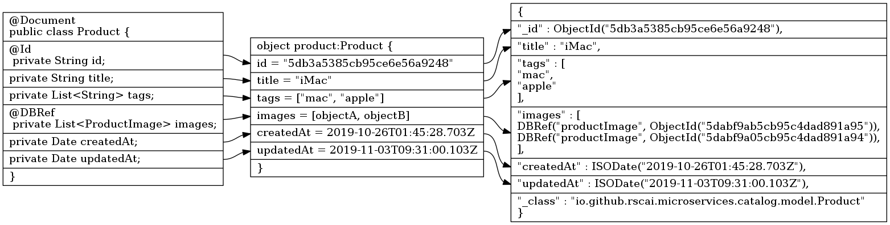
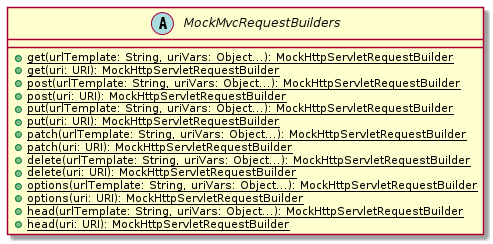
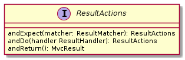

目标
本章中，我们将基于Spring Boot开发提供RESTful API的Catalog微服务。我们将学习：
-
使用Lombok在编译器生成Getter和Setter访问器，减少模板代码
-
使用Spring Data/Spring Data MongoDB访问MongoDB
-
使用Spring Data REST从Repository构建RESTful API
-
使用Spring Test/MockMVC测试RESTFul API
-
使用Spring REST Docs生成简洁、准确且结构良好的RESTFul API文档
设计
用例
Catalog微服务负责维护Product和ProductImage两个业务模型实体。
-
Product，可被独立增删改查的业务实体，其可关联一至多个ProductImage
-
ProductImage，可被独立增删改查的业务实体，其可被零至一个Product关联。如若关联其的Product被移除，不会影向ProductImage实体的状态。
Catalog微服务需支持特性：
-
创建新的ProductImage
-
更新ProductImage
-
移除ProductImage
-
分页查询所有ProductImage
-
读取单个ProductImage
-
创建新的Product
-
更新Product
-
移除Product
-
分页查询所有ProductImage
-
读取单个Product
架构
Catalog微服务採用分层架构，自上往下分为：
-
展示层。以RESTFul风格向外曝露Catalog支持的领域模型和操作，以JSON格式接受和回应领域模型内容。
-
业务逻辑层，处理应用相关的业务逻辑，比如填充createdAt和updatedAt。
-
数据访问层，处理Java object和具体存储实体之间的映射转换，实现橧删改查等存储访问操作。
这𥚃我们採用Spring Data REST实现展现层；供助Spring Data REST开放的实体事件扩展机制，实现业务逻辑；数据存储方案选用MongoDB；数据访问层採用Spring Data MongoDB实现。
理解 Lombok
Lombok项目是一个Java库，它会自动插入您的编辑器和构建工具中，从而使您的Java更加生动有趣。 永远不要再写另一个getter或equals方法，带有一个註释的您的类有一个功能全面的生成器，自动化您的日志记录变量等等。
https://projectlombok.org
使用javac（以及netbeans，maven，gradle和大多数其他构建系统）时，lombok作为註释处理器运行。
Lombok在classpath中，且javac将在它可以找到的类路径上加载每个
META-INF/services/javax.annotation.processing.Processor文件，读取每一行并加载该类，然后将其作为註释处理器执行。lombok.jar有此文件，它将`lombok.launch.AnnotationProcessorHider$AnnotationProcessor`列为条目。
https://projectlombok.org/contributing/lombok-execution-path
Lombok实现为注解处理器「Annotation Processor」，在编译期被Java编译器调用，扫描代码，读取Lombok注解及关键词标注的类，并执行相应的代码转换。
|
Lombok官方网站 Lombok Project |
理解 REST
代表性状态转移（REST）是一种软件体系结构样式，它定义了一组用于创建Web服务的约束。 符合REST体系结构样式的Web服务（称为RESTful Web服务）提供Internet上计算机系统之间的互操作性。 RESTful Web服务允许请求系统通过使用统一且预定义的无状态操作集来访问和操纵Web资源的文本表示。 其他类型的Web服务（例如SOAP Web服务）公开其自己的任意操作集。
https://en.wikipedia.org/wiki/Representational_state_transfer
RESTFul Web服务有以下特性：
-
以资源为中心，领域模型在RESTFul API中表现为资源，所有的业务操作都表现为对资源的操作。
-
重用HTTP请求方法。以HTTP请求方法表逹对资源的操作。HTTP协议中定义了九种请求方法：
Method Description GET
GET方法请求指定资源的表示形式。 使用GET的请求应仅检索数据。
HEAD
HEAD方法请求的响应与GET请求的响应相同，但没有响应主体。
POST
POST方法用于将实体提交给指定的资源，通常会导致状态更改或对服务器产生副作用。
PUT
PUT方法用请求有效负载替换目标资源的所有当前表示形式。
DELETE
DELETE方法删除指定的资源。
CONNECT
CONNECT方法建立到由目标资源标识的服务器的隧道。
OPTIONS
OPTIONS方法用于描述目标资源的通信选项。
TRACE
TRACE方法沿到目标资源的路径执行消息环回测试。
PATCH
PATCH方法用于对资源进行部分修改。
RESTFul 主要重用其中的POST、DELETE、PUT和GET来分别表逹增、删、改和查操作。
-
重用HTTP向应状态码。重用HTTP向应状态码来表逹请求的处理结果。HTTP协议定义了五类向应状态码
-
信息性的向应（100-199）
-
成功的向应（200-299）
-
重定向（300-399）
-
客户端错误（400-499）
-
服务端错误（500-599）
常用的向应状态码有：
Code 说明 200 OK
该请求已成功。
201 Created
请求成功，并因此创建了新资源。 这通常是在POST请求或某些PUT请求之后发送的响应。当使用POST请求访问RESTFul API创建新资源实体后，应返回向应状态码200。
204 No Content
没有要发送的内容，但标头可能有用。 用户代理可以使用新的代理更新该资源的缓存头。当使用PUT请求访问RESTFul API更新资源实体且未在向应报文中包含更新后的实体，应使用向应状态码204。
400 Bad Request
由于语法无效，服务器无法理解该请求。
401 Unauthorized
尽管HTTP标准指定“未经授权”，但从语义上讲，此响应表示“未经验证”。 也就是说，客户端必须对自己进行身份验证才能获得请求的响应。
403 Forbidden
客户端无权访问内容； 也就是说，它是未经授权的，因此服务器拒绝提供所请求的资源。 与401不同，服务器知道客户端的身份。
404 Not Found
服务器找不到请求的资源。 在浏览器中，这意味着无法识别URL。 在API中，这也可能意味着端点有效，但是资源本身不存在。 服务器也可以发送此响应而不是403，以隐藏来自未授权客户端的资源。 由于此响应代码在网络上经常出现，因此可能是最着名的响应代码。
405 Method Not Allowed
服务器知道该请求方法，但已被禁用，无法使用。比如针对祗读资源的写请求（POST、DELETE、PUT），RESTFul API可以向应此状态码。
415 Unsupported Media Type
服务器不支持所请求数据的媒体格式，因此服务器拒绝了该请求。
500 Internal Server Error
服务器遇到了不知道如何处理的情况。任何业务逻辑的错误都不应该向应该状态码。祗有真正无法处理或恢复的失效，比如依赖服务不可用等，才可以向应该状态码。
-
Product RESTFul Web API
REST Web服务以资源为中心，把领域模型Product直接映射为资源product，所以资源product的根URL就为 /products 。因为从语义上讲，对资源根URL的操作，如GET、POST，都是作用于资源集合而非单个资源实体，所以使用复数形式更为恰当。（很多人认为使用单数形式是最佳实践，因为英文名词的复数形式规则并不统一且大部份人英文不好，硬用复数形式容易出现拚写错误）
| 操作 | URL | HTTP方法 |
|---|---|---|
创建新Product |
/products |
POST |
更新Product |
/products/<productId> |
PUT |
更新与ProductImage之间的关联 |
/products/<productId>/images |
PUT |
移除Product |
/products/<productId> |
DELETE |
读取单个Product |
/products/<productId> |
GET |
分页读取所有Product |
/products?page=<pageIndex>&size=<pageSize> |
GET |
读取Product关联的ProductImage |
/products/<productId>/images |
GET |
ProductImage RESTFul API
| 操作 | URL | HTTP方法 |
|---|---|---|
创建新ProductImage |
/productImages |
POST |
更新ProductImage |
/productImages/<productImageId> |
PUT |
移除ProductImage |
/productImages/<productImageId> |
DELETE |
读取单个ProductImage |
/productImages/<productImageId> |
GET |
分页读取所有ProductImage |
/productImages?page=<pageIndex>&size=<pageSize> |
GET |
理解 JSON
JSON(JavaScript Object Notation) 是一种轻量级的数据交换格式。易于人阅读和编写。同时也易于机器解析和生成。它基于JavaScript Programming Language, Standard ECMA-262 3rd Edition - December 1999的一个子集。 JSON採用完全独立于语言的文本格式，但是也使用了类似于C语言家族的习惯（包括C, C++, C#, Java, JavaScript, Perl, Python等）。这些特性使JSON成为理想的数据交换语言。
JSON建构于两种结构：
“名称/值”对的集合（A collection of name/value pairs）。不同的语言中，它被理解为对象（object），纪录（record），结构（struct），字典（dictionary），哈希表（hash table），有键列表（keyed list），或者关联数组（associative array）。
值的有序列表（An ordered list of values）。在大部分语言中，它被理解为数组（array）。
https://www.json.org/json-zh.html
JSON是一种面向字符的、编程语言独立的、易于人和机器读写的数据交换格式。使用JSON作为RESTFul Web服务与消费者之间交换实体内容的数据格格，可以最大限度地提升Web服务的兼容性。但需要注意，JSON是面向文本的数据交换格式，所有类型的数据都必须被编码为文本形式，所以JSON并不适用二进制数据的交换，比如图像、音频、视频。
|
关于JSON的规范定义，请参阅 ECMA-404 The JSON Data Interchange Standard |
理解 Hypermedia-Driven
Hypermedia指代所有包含指向其它媒体（如图像、视频和文本等）的链接的内容。Hypermedia-Driven的RESTFul Web服务则是指在请求体和向应体的内容为Hypermedia。
HATEOAS（Hypermedia as the Engine of Application State）是一组附加在RESTFul风格架构之上的约束，其旨在约束Hypermedia-Driven RESTFul Web服务。HATEOAS没有严格的定义，各个框架都有自己的实现。但大多数HATEOAS实现都参考了以下规范：
理解 Spring Data REST
Spring Data REST是Spring Data的一部份，其致力于简化在Spring Data repository之上构建超媒体驱动「hypermedia-driven」 REST web微务。
Spring Data REST 构建于 Spring Data repository 之上，分析你的应用领域模型且曝露超媒体驱动HTTP资源。
Spring Framework 本身提供了Spring MVC。借助Spring MVC，可以快速构造RESTFul web服务。再加上Spring HATEOAS，就可以构建超媒体驱动的RESTFul web服务了。但是RESTFul web服务是以资源为中心，其为每类资源实现一组有限的动作，如POS创建、PUT更新、DELETE移除。直接使用Spring MVC构建RESTFul web服务会造成很多模板代码。Spring Data REST就是为了避免使用Spring MVC构建RESTFul web服务时产生冗余模板代码而被创造出来。Spring Data REST分析应用中的repository，分拣出领域模型和增删改查方法，分别曝露为相应的RESTFul URLs.
Spring Data REST 开放出了八个实体事件，应用开发者可以注入自定义的事件监听器以实现业务逻辑处理。Spring Data REST会释放出以下八种事件：
-
BeforeCreateEvent -
AfterCreateEvent -
BeforeSaveEvent -
AfterSaveEvent -
BeforeDeleteEvent -
AfterDeleteEvent -
BeforeLinkSaveEvent -
AfterLinkSaveEvent -
BeforeLinkDeleteEvent -
AfterLinkDeleteEvent
BeforeCreateEvent 和 AfterCreateEvent
Spring Data REST在创建实体实例时，会释放出 BeforeCreateEvent 和 AfterCreateEvent。
...
private ResponseEntity<ResourceSupport> createAndReturn(Object domainObject, RepositoryInvoker invoker,
PersistentEntityResourceAssembler assembler, boolean returnBody) {
publisher.publishEvent(new BeforeCreateEvent(domainObject)); (1)
Object savedObject = invoker.invokeSave(domainObject);
publisher.publishEvent(new AfterCreateEvent(savedObject)); (2)
...
}
...| 1 | 在调用repository方法将创建的实体持久化至存储服务之前，释放出事件 BeforeCreateEvent 。 |
| 2 | 在调用repository方法将创建的实体持久化至存储服务之后，释放出事件 AfterCreateEvent 。 |
POST和PUT请求都有可能触发实体的创建。POST在REST语义中就是创建新实体，所以POST请求肯定会触发实体创建。
...
@ResponseBody
@RequestMapping(value = BASE_MAPPING, method = RequestMethod.POST)
public ResponseEntity<ResourceSupport> postCollectionResource(RootResourceInformation resourceInformation,
PersistentEntityResource payload, PersistentEntityResourceAssembler assembler,
@RequestHeader(value = ACCEPT_HEADER, required = false) String acceptHeader)
throws HttpRequestMethodNotSupportedException {
resourceInformation.verifySupportedMethod(HttpMethod.POST, ResourceType.COLLECTION);
return createAndReturn(payload.getContent(), resourceInformation.getInvoker(), assembler,
config.returnBodyOnCreate(acceptHeader)); (1)
}
...PUT请求在REST语义中是更新实体，但若要求更新的目标实体不存在，则更新操作就自动转化为创建操作。所以，当使用PUT请求更新不存在的实体时，会触发实体创建。
...
@RequestMapping(value = BASE_MAPPING + "/{id}", method = RequestMethod.PUT)
public ResponseEntity<? extends ResourceSupport> putItemResource(RootResourceInformation resourceInformation,
PersistentEntityResource payload, @BackendId Serializable id, PersistentEntityResourceAssembler assembler,
ETag eTag, @RequestHeader(value = ACCEPT_HEADER, required = false) String acceptHeader)
throws HttpRequestMethodNotSupportedException {
...
return payload.isNew() ? createAndReturn(objectToSave, invoker, assembler, config.returnBodyOnCreate(acceptHeader))
: saveAndReturn(objectToSave, invoker, PUT, assembler, config.returnBodyOnUpdate(acceptHeader)); (1)
}
...| 1 | 若请求创建的实体是新建的即目标实体不存在，则更新请求转化为创建操作。 |
BeforeSaveEvent 和 AfterSaveEvent
Spring Data REST在更新实体时会释放出 BeforeSaveEvent 和 AfterSaveEvent 。
...
private ResponseEntity<ResourceSupport> saveAndReturn(Object domainObject, RepositoryInvoker invoker,
HttpMethod httpMethod, PersistentEntityResourceAssembler assembler, boolean returnBody) {
publisher.publishEvent(new BeforeSaveEvent(domainObject)); (1)
Object obj = invoker.invokeSave(domainObject);
publisher.publishEvent(new AfterSaveEvent(obj)); (2)
...
}
...| 1 | 在调用repository方法将更新的实体持久化至存储服务之前，释放出事件 BeforeSaveEvent 。 |
| 2 | 在调用repository方法将更新的实体持久化至存储服务之后，释放出事件 AfterCreateEvent 。 |
PUT和PATCH请求都会触发实体更新操作。
...
@RequestMapping(value = BASE_MAPPING + "/{id}", method = RequestMethod.PUT)
public ResponseEntity<? extends ResourceSupport> putItemResource(RootResourceInformation resourceInformation,
PersistentEntityResource payload, @BackendId Serializable id, PersistentEntityResourceAssembler assembler,
ETag eTag, @RequestHeader(value = ACCEPT_HEADER, required = false) String acceptHeader)
throws HttpRequestMethodNotSupportedException {
...
return payload.isNew() ? createAndReturn(objectToSave, invoker, assembler, config.returnBodyOnCreate(acceptHeader))
: saveAndReturn(objectToSave, invoker, PUT, assembler, config.returnBodyOnUpdate(acceptHeader)); (1)
}
...| 1 | 当请求更新的目标实体存在时，PUT请求触发更新操作。 |
...
@RequestMapping(value = BASE_MAPPING + "/{id}", method = RequestMethod.PATCH)
public ResponseEntity<ResourceSupport> patchItemResource(RootResourceInformation resourceInformation,
PersistentEntityResource payload, @BackendId Serializable id, PersistentEntityResourceAssembler assembler,
ETag eTag, @RequestHeader(value = ACCEPT_HEADER, required = false) String acceptHeader)
throws HttpRequestMethodNotSupportedException, ResourceNotFoundException {
...
return saveAndReturn(domainObject, resourceInformation.getInvoker(), PATCH, assembler,
config.returnBodyOnUpdate(acceptHeader)); (1)
}
...-
PATCH请求祗能触发实体更新。
BeforeDeleteEvent 和 AfterDeleteEvent
Spring Data REST在移除实体时会释放出事件 BeforeDeleteEvent 和 AfterDeleteEvent 。
...
@RequestMapping(value = BASE_MAPPING + "/{id}", method = RequestMethod.DELETE) (1)
public ResponseEntity<?> deleteItemResource(RootResourceInformation resourceInformation, @BackendId Serializable id,
ETag eTag) throws ResourceNotFoundException, HttpRequestMethodNotSupportedException {
...
return domainObj.map(it -> {
PersistentEntity<?, ?> entity = resourceInformation.getPersistentEntity();
eTag.verify(entity, it);
publisher.publishEvent(new BeforeDeleteEvent(it)); (2)
invoker.invokeDeleteById(entity.getIdentifierAccessor(it).getIdentifier());
publisher.publishEvent(new AfterDeleteEvent(it)); (3)
return new ResponseEntity<Object>(HttpStatus.NO_CONTENT);
}).orElseThrow(() -> new ResourceNotFoundException());
}
...| 1 | 针对实体的DELETE请求会触发实体移除操作。 |
| 2 | 在将实体从存储服务中移除之前，释放出事件 BeforeDeleteEvent 。 |
| 3 | 在将实体从存储服务中移除之后，释放出事件 AfterDeleteEvent 。 |
BeforeLinkSaveEvent 和 AfterLinkSaveEvent
Spring Data REST在创建和变更实体关联时会释放出 BeforeLinkSaveEvent 和 AfterLinkSaveEvent 。
...
@RequestMapping(value = BASE_MAPPING, method = { PATCH, PUT, POST }, (1)
consumes = { MediaType.APPLICATION_JSON_VALUE, SPRING_DATA_COMPACT_JSON_VALUE, TEXT_URI_LIST_VALUE })
public ResponseEntity<? extends ResourceSupport> createPropertyReference(RootResourceInformation resourceInformation,
HttpMethod requestMethod, @RequestBody(required = false) Resources<Object> incoming, @BackendId Serializable id,
@PathVariable String property) throws Exception {
...
Function<ReferencedProperty, ResourceSupport> handler = prop -> {
...
publisher.publishEvent(new BeforeLinkSaveEvent(prop.accessor.getBean(), prop.propertyValue)); (2)
Object result = invoker.invokeSave(prop.accessor.getBean());
publisher.publishEvent(new AfterLinkSaveEvent(result, prop.propertyValue)); (3)
return null;
};
doWithReferencedProperty(resourceInformation, id, property, handler, requestMethod);
return ControllerUtils.toEmptyResponse(HttpStatus.NO_CONTENT);
}
...| 1 | PATCH、PUT或POST请求链接（LINK）类型的实体属性都会触发实体链接属性的创建或变更。 |
| 2 | 在将链接属性变更持久化至存储服务之前，释放出 BeforeLinkSaveEvent 。 |
| 3 | 在将链接属性变更持久化至存储服务之后，释放出 AfterLinkSaveEvent 。 |
BeforeLinkDelete 和 AfterLinkDelete
Spring Data REST在移除实体之间的关联（LINK）时，会释放出 BeforeLinkDeleteEvent 和 AfterLinkDeleteEvent 。
...
@RequestMapping(value = BASE_MAPPING, method = DELETE) (1)
public ResponseEntity<? extends ResourceSupport> deletePropertyReference(RootResourceInformation repoRequest,
@BackendId Serializable id, @PathVariable String property) throws Exception {
Function<ReferencedProperty, ResourceSupport> handler = prop -> prop.mapValue(it -> {
...
publisher.publishEvent(new BeforeLinkDeleteEvent(prop.accessor.getBean(), prop.propertyValue)); (2)
Object result = repoRequest.getInvoker().invokeSave(prop.accessor.getBean());
publisher.publishEvent(new AfterLinkDeleteEvent(result, prop.propertyValue)); (3)
return (ResourceSupport) null;
}).orElse(null);
doWithReferencedProperty(repoRequest, id, property, handler, HttpMethod.DELETE);
return ControllerUtils.toEmptyResponse(HttpStatus.NO_CONTENT);
}
...| 1 | 目标为链接类型的实体属性的DELETE请求会触发实体关联移除操作。 |
| 2 | 在将实体关联移除持久化至存储服务之前，释放出事件 BeforeLinkDeleteEvent 。 |
| 3 | 在将实体关联移除持久化至存储服务之后，释放出事件 AfterLinkDeleteEvent 。 |
注入事件处理器
应用开发者可以自定义事件处理器，再使用注解将自定义事件处理器注删为事件监听器。Spring Data REST提供了十个注解分别对应上述十个实体事件：
-
@HandleBeforCreate -
@HandleAfterCreate -
@HandleBeforeSave -
@HandleAfterSave -
@HandleBeforeDelete -
@HandleAfterDelete -
@HandleBeforeLinkSave -
@HandleAfterLinkSave -
@HandleBeforeLinkDelete -
@HandleAfterLinkDelete
理解 MongoDB
MongoDB是一个文档数据库，具有所需的可伸缩性和灵活性，可用于所需的查询和索引编制。
MongoDB将数据存储在类似于JSON的灵活文档中，这意味着字段随文档的不同而不同，并且数据结构可以随时间而变化
文档模型映射到应用程序代码中的对象，从而使数据易于使用
临时查询，索引编制和实时聚合提供了访问和分析数据的强大方法
MongoDB以分佈式数据库为核心，因此内置了高可用性，水平扩展和地理分佈并且易于使用
MongoDB是免费使用的。 在AGPL下发布了2018年10月16日之前发布的版本。 2018年10月16日之后发布的所有版本（包括先前版本的修补程序修补程序）均根据服务器端公共许可证（SSPL）v1发布。
https://www.mongodb.com/what-is-mongodb
MongoDB是schema-free的数据库，其非常适用于同一类别数据结构会随时间较频繁变动（增加属性、减少属性等）的应用场景。Catalog服务所维护的数据就符合这一特征。
理解 Spring Data MongoDB
Spring Data的任务是为数据访问提供一个熟悉且一致的基于Spring的编程模型，同时仍保留基础数据存储的特殊特征。
Spring Data MongoDB是Spring Data项目的一部分，该项目旨在为新数据存储提供熟悉且一致的基于Spring的编程模型，同时保留特定于存储的功能。
Spring Data MongoDB项目提供了与MongoDB文档数据库的集成。 Spring Data MongoDB的关键功能区域是一个以POJO为中心的模型，该模型用于与MongoDB DBCollection进行交互并轻松编写存储库样式的数据访问层。
Spring Data的核心模式是仓库设计模式「Repository Design Pattern」。 仓库设计模式最早由Eric Evens在他的着作《Domain Driven Design》中提出，其核心概念是仓库「Repository」。仓库在业务逻辑层与数据源之间扮演着中间人的⻆色，其解耦了业务逻辑层和数据源，使用业务逻辑层无需关心具体数据源的接口或任何接口变更，甚至无需任何业务逻辑层的代码变更就可以迁移至不同的数据源上。
Spring Data提供的核心接口就是 Repository 。应用开发者祗需声明专用于领域模型的、继承 Repository 的仓库接口，针对特定存储服务实现的Spring Data模块（如Spring Data MongoDB）会构造相应的仓库实现Bean。
Spring Data除了 Repository 之外，还提供了其它仓库接口。这些仓库口提供了常用的数据访问操作:
-
org.springframework.data.repository.CrudRepository提供了基本的增删改查操作 -
org.springframework.data.repository.PagingAndSortingRepository添加了分页和排序功能 -
org.springframework.data.repository.query.QueryByExampleExecutor提供了相似查询功能，应用可以按照业务逻辑定义相似算法，查询相似（不完全相同，或主键相同）的实体
Spring Data MongoDB在Spring Data Commons提供的仓库接口基础上，还扩展了 org.springframework.data.mongodb.repository.MongoRepository 。
理解JUnit
JUnit 是一个 Java 编程语言的单元测试框架。JUnit 定义了三层单元测试组织结构：
-
TestSuite
-
TestCase
-
Test
Test 是单元测试的最小组织单位，多个 Test 可以组织为 TestCase，多个 TestCase 可以组织为 TestSuite。在 Java 中，TestCase 和 TestSuite 实现为类，Test 实现为 TestCase 的方法。所以在实际应用中，Test 和 TestCase 是必须的，TestSuite 是可选的。
Junit 定义了五个单元测试执行阶段：
-
BeforeClass
-
BeforeEach
-
Test
-
AfterEach
-
AfterClass
BeforeClass 为 TestCase 的初始阶段，JUnit 在即将执行 TestCase 所包含的 Test 之前执行 BeforeClass；BeforeEach 为 Test 的前置阶段，JUnit 在每次执行 Test 之前执行 BeforeEach；Test 为单元测试的主要阶段，该阶段应包含向测试对象输入和断言测试对象的输出；AfterEach 为 Test 的后置阶段，JUnit 在每次执行 Test 之后执行 AfterEach；AfterClass 为 TestCase 的善后阶段，JUnit 在执行完 TestCase 所包含的所有 Test 之后执行 AfterClass。
举个例子，
public class ExampleTest {
private Example testObject;
@BeforeClass
public void beforeClass() {
System.out.println("Before test case ExampleTest");
}
@AfterClass
public void afterClass() {
System.out.println("After test case ExampleTest");
}
@BeforeEach
public void setUp() {
System.out.println("SetUp for each test");
testObject = new Example();
}
@AfterEach
public void tearDown() {
System.out.println("TearDown for each test");
}
@Test
public void testFunA() {
String actual = testObject.funA();
assertEqual(actual, "expected value");
}
@Test
public void testFunB() {
String actual = testObject.funB();
assertEqual(actual, "expected value");
}
}BeforeClass, AfterClass, BeforeEach, AfterEach 和 Test 都被实现为 TestCase 的方法，通过注解声明。JUnit 在执行上述 TestCase，方法调用序列为：
-
beforeClass() -
setUp() -
testFunA() -
tearDown() -
setUp() -
testFunB() -
tearDown() -
afterClass()
理解Spring MVC Test Framework
Spring MVC测试框架提供了一流的支持，可使用可与JUnit，TestNG或任何其他测试框架一起使用的流畅API测试Spring MVC代码。 它基于spring-test模块的Servlet API mock objects构建，因此不使用正在运行的Servlet容器。
https://docs.spring.io/spring-framework/docs/current/spring-framework-reference/testing.html#spring-mvc-test-framework
Spring MVC Test框架通过 DispatcherServlet 与Spring MVC代码直接通信，无需运行Servlet容器。且测试代码与被测试代码（服务端代码）运行在同一个JVM中，所以不仅可以验证服务端代码的输出还可以验证服务端代码的内部状态，即支持服务端代码的白盒测试。
在生产环境中， dispatcherServlet 和 controller 都运行在 Servlet 容器中（Spring Boot应用是内嵌Servlet容器），并通过Servlet容器向外曝露HTTP服务。客户端应用（Web浏器、原生应用等）通过HTTP协议访问Servlet容器，Servlet容器将请求转化为 HttpServletRequest 交由 dispatcherServlet ； dispatcherServlet 再分发给对应的 controller 。
Spring MVC Test框架则通过MockMvc（Servlet API mock objects）直接与 dispatcherServlet 通信。我们的测试目标是应用上下文配置和 controller 及其调用的其它Beans，Servlet容器并不是我们的测试目标（因为它们的代码不是我们写的）。使用这种测试方法可以最大限度地排除第三方代码，仅关注于应用代码的测试。
理解 Spring REST Docs
Spring REST Docs可帮助您记录RESTful服务。
它结合了用Asciidoctor编写的手写文档和Spring MVC Test生成的自动生成的代码片段。 这种方法使您摆脱了Swagger之类的工具所产生的文档限制。
它可以帮助您生成准确，简洁且结构合理的文档。 然后，该文档可让您的用户以最少的麻烦获得他们所需的信息。
https://spring.io/projects/spring-restdocs
Spring REST Docs致力于帮助应用开发者生成准确且可读的RESTFul服务文档。Spring REST Docs借助测试生成的HTTP请求和响应内容片断，再组合手工编写的Asciidoc或Markdown文本，产生HTML格式的文档。文档的生成依赖测试的通过。所以当测测未通过时，文档也不会被生成，从而避免成生与实现不符的文档。
Spring REST Docs可以从由Spring MVC Test框架、Spring WebFlux’s WebTestClient 和REST Assured 3编写的测试中截取HTTP请求和响应片断。
应用开发者编写asciidoc文档（以.adoc, .asciidoc, .ad, .asc山大弓火后缀的），引用Spring REST Docs在测试阶段截取的片断。Asciidoctor读取asciidoc文档和请求响应片断，转换生成HTML格式的可阅读文档（Asciidoctor还支持其它输出格式，如PDF、EPUB等）。
作为Spring REST Docs的核心，其提供了丰富的HTTP请求响应片断截取和注释功能。所有这些截取注释功能都实现为 org.springframework.restdocs.snippet.Snippet 的实现类，应用开发者通过构造方法获取这些Snippet实现类实例。
HTTP报文分为请求（request）报文和响应（response）报文。请求报文由三部份组成：请求行（Request Line）、头（Header Field）和消息体（Message Body）。响应报文也由三部份组成：状态行（Status Line）、头（Header Field）和消息体（Message Body）。
Spring REST Docs为请求行，头和消息体分别提供了Snippet。这些Snippet的构造方法被组织为三个类：
-
org.springframework.restdocs.request.RequestDocumentation包含用于截取请求行中各个部份的Snippet的构造方法。 -
org.springframework.restdocs.headers.HeaderDocumentation包含用于截取请求头和响应头的Snippet的构造方法。 -
org.springframework.restdocs.payload.PayloadDocumentation包含用于截取请求消息体和响应消息体的Snippet的构造方法。
除此之外，Spring REST Docs还为Hypermedia-Driven RESTFul Web服务提供了专用的Snippets。这些专用Snippets的构造方法被组织为类 org.springframework.restdocs.hypermedia.HypermediaDocumentation 。
|
关于Spring REST Docs完整的资料，请参阅官方文档 Spring REST Docs |
实现
最简单的创建一个新的 Spring Boot 应用方法是使用 Spring Initializr。使用浏览器访问 https://start.spring.io :
-
Project 选择 Gradle Project，使用 Gradle 构建我们的项目；
-
Language 选择 Java；
-
Spring Boot 撰择 2.2.7 或其它 2.2.x 版本，最新版（讫今为止）的 Spring Cloud Hoxton 兼容 Spring Boot 2.2.x；
-
Project Metadata 部份，Group 填
io.github.rscai.microservices，Artifact 填catalog，Name 填catalog，Packaging 撰 Jar，Java 撰择版本 8； -
Dependencies 选择
-
Spring Web
-
Spring Data MongoDB
-
Rest Repositories
-
单击GENERATE，Spring initializr 就会生成 ZIP 格式的项目文件。
将 catalog.zip 解压后得到一个 Spring Boot 项目。其中：
.
├── .gitignore
├── HELP.md
├── build.gradle
├── gradle
│ └── wrapper
│ ├── gradle-wrapper.jar
│ └── gradle-wrapper.properties
├── gradlew
├── gradlew.bat
├── settings.gradle
└── src
├── main
│ ├── java
│ └── resources
└── test
└── java
└── resources
-
.gitignore, 罗列了应被 GIT 忽略的文件和目录。自动生成及临时文件及目录不应被纳入版本控制； -
build.gradle，Gradle 项目文件，定义了项结构及构建过程； -
gradle/wrapper/包含所有 Gradle Wrapper 相关的文件； -
gradlew是 UNIX-like 平台版本的 Gradle 命令包装； -
gradlew.bat是 Windows 平台版本的 Gradle 命令包装； -
HELP.md顾名思义是帮助文档，与 README 类似； -
setting.gradleGradle 的属性文件； -
src/包含所有源代码和资源文件： -
src/main/包含所有部署至运行环境的源代码文件（以编译后的目标代码形式被部署至运行环境）和资源文件： -
src/main/java/包含所有部署至运行环境的 Java 源代码文件： -
src/main/resources/包含所有部署至运行环境的资源文件； -
src/test包含所有用于测试的源代码和资源文件； -
src/test/java/包含所有用于测试的 Java 源代码文件； -
src/test/resource/包含所有用于测试的资源文件。
将 catalog 项目导入 IntelliJ IDEA。首先，打开 Intellij IDEA，然后，单系 Import Project，选定 catalog 项目目录，再然后选择以 Gradle 项目形式导入。IntelliJ IDEA 会自动初始执行 Gradle 配置，下载 /gradle/wrapper/gradle-wrapper.properties 中指定版本的 Gradle。
构建
本项目使用 Gradle 构建。Gradle 构建过程主要通过 build.gradle 描述。
首先，引用必要的 Gradle 插件。
plugins {
id 'org.springframework.boot' version '2.2.2.RELEASE' (1)
id 'io.spring.dependency-management' version '1.0.8.RELEASE' (2)
id 'java'
id "io.freefair.lombok" version "4.1.6"
id "org.sonarqube" version "2.7.1"
id 'jacoco'
id 'org.asciidoctor.convert' version '1.5.3'
}
...| 1 | 引入 Spring Boot 插件，其版本决定了引入的 Spring Boot 库的版本。所以有了 Spring Boot 插件，就无需显式指定各个 Spring Boot 库的版本了。 |
| 2 | 引入 Spring 依赖管理插件。 |
然后，引入依赖。
...
ext {
snippetsDir = file('build/generated-snippets')
set('springCloudVersion', "Hoxton.SR1") (1)
}
dependencies {
asciidoctor 'org.springframework.restdocs:spring-restdocs-asciidoctor'
implementation 'org.springframework.boot:spring-boot-starter-data-mongodb' (2)
implementation 'org.springframework.boot:spring-boot-starter-web' (3)
implementation 'org.springframework.boot:spring-boot-starter-data-rest' (4)
implementation 'org.springframework.boot:spring-boot-starter-actuator'
implementation 'org.springframework.cloud:spring-cloud-starter-netflix-eureka-client'
implementation 'org.springframework.boot:spring-boot-starter-security'
implementation 'org.springframework.security:spring-security-oauth2-resource-server'
implementation 'org.springframework.security:spring-security-oauth2-jose'
testImplementation 'org.springframework.boot:spring-boot-starter-test'
testImplementation 'org.springframework.restdocs:spring-restdocs-mockmvc'
testImplementation 'de.flapdoodle.embed:de.flapdoodle.embed.mongo'
testImplementation 'org.springframework.security:spring-security-test'
}
dependencyManagement {
imports {
mavenBom "org.springframework.cloud:spring-cloud-dependencies:${springCloudVersion}" (5)
}
}
...| 1 | 将 Spring Cloud 版本定义为变量，便于引用及统一管理。Spring Cloud 与 Spring Boot 之间的版本兼容性发佈在 https://spring.io/projects/spring-cloud#overview
|
||||||||||||
| 2 | org.springframework.boot:spring-boot-starter-data-mongodb 引入 Spring Data MongoDB 相关的库，用以生成访问 MongoDB 的 Repository。 |
||||||||||||
| 3 | spring-boot-starter-web 引入了 Spring MVC 相关的库。 |
||||||||||||
| 4 | org.springframework.boot:spring-boot-starter-data-rest 引入 Spring Data REST 相关的库。Spring Data REST 将 Repository 方法发佈为 RESTFul 风格的 Web 服务，以减少模板代码。 |
||||||||||||
| 5 | 通过引入 org.springframework.cloud:spring-cloud-dependencies BOM 来管理 Spring Cloud 库的版本。 |
领域模型
利用Lombok编译期生成getter/setter方法，减少重复的模板代码。
使用Spring Data MongoDB提供的注解描述java类与MongoDB集合、java字段与MongoDB字段之间的映射关系。Spring Data MongoDB会根据映射关系生成对应的Repository实现。
Product
@Getter (1)
@Setter (2)
@Document (3)
public class Product {
@Id (4)
private String id;
private String title;
private List<String> tags;
@DBRef (5)
private List<ProductImage> images;
private Date createdAt;
private Date updatedAt;
}| 1 | Lombok会在编译期扫描类，为以 lombok.Getter 注解标注的类中所有成员字段生成getter访问器。比如针对字段 private String id ，其生成了相当与以下源代码的Getter访问器：
为了使使用Gradle构建项目也可处理Lombok注解、生成相应访问器，我们需要在 build.gradle
|
| 2 | Lombok会在编译期扫描类，为以 lombok.Setter 注解标注的类中所有成员字段生成Setter访问器。比如针对字段 private String id ，其生成了相当与以下代码的Setter访问器：
|
| 3 | 注解 org.springframework.data.mongodb.core.mapping.Document 将一个Java类映射到MongoDB的某个Collection。在MongoDB中，Collection是Document的集合。在Java中，Class是Object的模板，"从某个Class实例出来的Object"是一个Object的集合。所以，在Java Class/Object与MongoDB Collection/Document映射关系中，Class对应Collection，Object对应Document。而Object中的字段对应Document中的字段。

其实例object映射为MongoDB中的一个docuemnt。object中的每一个属性映射为document中的一个字段。比如，object中的字段 |
| 4 | 使用注解 org.springframework.data.annotation.Id 将对象中的字段`id`映射为文档的主键 id 。 |
| 5 | 使用注解 org.springframework.data.mongodb.core.mapping.DBRef 将对象中的字段 images 映射为一组 com.mongodb.DBRef 。 com.mongodb.DBRef 是指向另一个文档的引用。 @DBRef 可用以标注简单字段或集合字段。 |
Spring Data MongoDB提供的映射注解：
| 注解 | 作用目标 | 说明 |
|---|---|---|
@Id |
字段 |
指明该字段是主键。 |
@MongoId |
字段 |
指明该字段是主键，与@Id不同的是其接受一个可选的参数 |
@Document |
类 |
指明该类是要映射至数据库的。同时可以指定对应的collection名穪。 |
@DBRef |
字段 |
指明该字段会被映射为 |
@Indexed |
字段 |
描述该字段上的索引。 |
@CompoundIndex |
类 |
描述联合索引。 |
@GeoSpatialIndexed |
字段 |
描述该字段上的地理索引。 |
@TextIndexed |
字段 |
描述该字段上的文本索引。 |
@HashIndexed |
字段 |
声明该字段上的HASH索引以用于分片集群上分区数据。 |
@Language |
字段 |
为文本索引设置语言属性。 |
@Transient |
字段 |
默认所有私有字段都被映射到Mongo文档，该注解可以显式指明不映射该字段。 |
@PersistenceConstructor |
构造器 |
指明在从数据库实例化对象时使用该构造器。构造器的实参则按名穪从数据库文档中获取。 |
@Value |
构造器参数 |
显式声明构造器参数所对应的文档字段。 |
@Field |
字段 |
显式描述字段映射，包括对应文档中字段的名穪和类型。 |
@Version |
字段 |
指明该字段将作为乐观锁定「Optimistic Locking」机制中的版本属性，在保存变更之前都会先检查版本值是否为所期望的。其初始值为 |
ProductImage
@Getter (1)
@Setter (2)
@Document (3)
public class ProductImage {
@Id (4)
private String id;
private String src;
private Date createdAt;
private Date updatedAt;
}| 1 | Lombok会在编译期扫描类，为以 @lombok.Getter 注解标注的类中所有成员字段生成getter访问器。 |
| 2 | Lombok会在编译期扫描类，为以 @lombok.Setter 注解标注的类中所有成员字段生成setter访问器。 |
| 3 | 注解 org.springframework.data.mongodb.core.mapping.Document 将一个类 ProductImage 映射至MongoDB的Collection ProductImage。 |
| 4 | org.springframework.data.annotation.Id 将对象中的字段 id 映射为文档的主键 id 。 |
仓库 Repository
Repository 是Spring Data抽象的中心接口。应用开发者以 Repository 子接口的形式声明模型Repository及其需支持的数据访问方法，Spring Data的具体数据存储模块（本例中是Spring Data MongoDB）将会为其生成相应的实现类。由于这些实现类仅包含模板代码，所以自动生成可以大幅减少应用开发者重复工作。
ProductRepository
@RepositoryRestResource(collectionResourceRel = "products", path = "products")
public interface ProductRepository extends MongoRepository<Product, String> { (1)
}| 1 | 为模型 Product 创建专属的 ProductRepository 接口，继承至 org.springframework.data.mongodb.repository.MongoRepository . MongoRepository 继承了接口 PagingAndSortingRepository ，Spring Data MongoDB会其生成一个支持增删改查及分页排序的MongoDB访问实现类。因为 ProductRepository 除了继承的方法声明外，没有声明其它方法，所以Spring Data MongoDB就会直接使用通用的实现类 org.springframework.data.mongodb.repository.support.SimpleMongoRepository<T, ID> 做为其实现。 |
ProductImageRepository
@RepositoryRestResource(collectionResourceRel = "productImages", path = "productImages")
public interface ProductImageRepository extends MongoRepository<ProductImage, String> { (1)
}| 1 | 为模型 ProductImage 创建专属的 ProductImageRepository ，继承至 org.springframework.data.mongodb.repository.MongoRepository 。 |
RESTful Web 服务
Spring Data REST 是Spring Data的一部份，旨于简化在Spring Data仓库上构建hypermedia-driven REST Web服务。应用开发者仅需在依赖中引入 spring-boot-starter-data-rest ，再声明领域模型的仓库，Spring Data REST就会将其发佈为 Hypermedia-Driven REST Web服务。
...
dependencies {
...
implementation 'org.springframework.boot:spring-boot-starter-data-rest' (1)
...
}
...| 1 | 将 spring-boot-starter-data-rest 引入至 implemenation 范围依赖。 |
@RepositoryRestResource(collectionResourceRel = "products", path = "products") (1)
public interface ProductRepository extends MongoRepository<Product, String> {
}| 1 | @RepositoryRestResource 宣告 ProductRepository 的数据访问方法需被曝露为RESTful介面。RESTFul风格的API是以resource为中心，repository所专属的模型就对应为RESTFul中的resource。 @RepositoryRestResource 充许应用开发者自定义模型所对应的resource在URL中及在内容体中的名字。本例中，resource Product的根RESTFul URL定义为 products/ 。在HATEOAS标准的内容体中，Product集合会被命名为 products ，例如：
|
Spring Data REST有四种仓库检测策略，用以检测哪些仓库应被曝露为REST Web服务。其默认的检测策略是曝露所有公共的仓库接口（除了通过注解显式标注不曝露的仓库），但我推荐使用 ANNOTATION 检测策略，仅曝露以注解 @RepositoryRestResource 显式标注的仓库。以下是Spring Data REST提供的四种仓库检测策略：
| 名穪 | 描述 |
|---|---|
DEFAULT |
曝露所有公共的仓库但通过注解 |
ALL |
曝露所有仓库，不考虑其可见性或被显式标记为不曝露。 |
ANNOTATED |
仅曝露被注解 |
VISIBILITY |
仅曝露公共的且被注解标记的仓库。 |
Spring Data REST的检测策略可以通过声明一个 RepositoryRestConfigurer Bean来自定义。
.RepositoryRestConfig.java
@Configuration (1)
public class RepositoryRestConfig {
@Bean (2)
public RepositoryRestConfigurer repositoryRestConfigurer() {
return new RepositoryRestConfigurer() {
@Override
public void configureRepositoryRestConfiguration(RepositoryRestConfiguration config) {
config.setRepositoryDetectionStrategy(RepositoryDetectionStrategies.ANNOTATED); (3)
}
};
}
}| 1 | @Configurition 声明该类为配置类。 |
| 2 | 在Spring上下文中声明个类型为 RepositoryRestConfigurer 的Bean。 |
| 3 | 构造一个子类，并覆写方法 configureRepositoryRestConfiguration ，自定义仓库检测策略为 ANNOTATED 。 |
@RepositoryRestResource(collectionResourceRel = "productImages", path = "productImages") (1)
public interface ProductImageRepository extends MongoRepository<ProductImage, String> {
}| 1 | 用注解 org.springframework.data.rest.core.annotation.RepositoryRestResource 宣告 ProductImageRepository 的数据访问方法需被曝露为RESTFul Web服务。RESTFul Web服务是以资源为中心的， ProductImageRepository 所专属于的领域模型 ProductImage 就对应为RESTFul中的资源。 @RepositoryRestResource 允许应用阙发者自定义模型所对应资源名穪。本例中，资源的名穪为`product`。 |
测试
一个典型的软件测试金字塔自下而上为：
-
单元测试「Unit Test」
-
集成测试「Integration Test」
-
契约测试「Contract Test」
-
端到端测试「End-to-End Test」
-
验收测试「Acceptance Test」
-
功能测试「Function Test」
-
性能测试「Performance Test」
- 单元测试
单元测试将成为你测试的基石。你的单元测试保证了代码库𥚃的某个单元（被测试的主体）能按照预期那样工作。单元测试在你的测试组合𥚃测试试的范围是最窄的。它的数量在测试组合中应该远远多于其他类型的测试。
- 集成测试
所有常见的应用都会和一些外部环境做集成（数据库、文件系统，向其他应用发起网络请求）。为了使测试更好地隔离、运行更快，我们通常不会在编写单元测试时涉及这些外部依赖。不过，这些交互始终是存在的，它们也需要被测试覆盖到。这正是集成测试的用处所在。它们测试的是应用与所有外部依赖的集成。
https://insights.thoughtworks.cn/practical-test-pyramid/
- 契约测试
越来越多现代软件组织发现，对于增长的开发需求，可以让不同的团队来开发同一系统的不同部分。每个团队负责构建独立、松耦合的服务，团队间开发不互相影响。最终再将这些服务集成为一个大而全的系统。最近关于微服务的讨论日益热烈，关注的正是这一点。
将系统拆分成多个更小的服务，常常意味着这些服务之间需要通过确定的（最好是定义明确的，但有时候会有变动演进）接口通信。
不同应用间的接口可能形态各异，或其于不同的技术栈。常见的有：
基于 HTTPS 使用 JSON 交互的 REST 接口
基于类似 gRPC 的 RPC （Remote Procedure Call，远程进程调用）接口
使用队列构建的事件驱动架构
对于任意一个接口，一定会涉及两个实体：提供方和消费方。提供方为消费方提供数据。消费方处理来自提供方的数据。在 REST 世界𥚃，提供方为所有要暴露的 API 创建一个 REST API；消费方则调用这些 API 来获取数据，或进一步触发其他的服务。而在一个由异步、事件驱动的世界，提供方（通常被穪为发佈者）发佈数据到一个队列中；消费方（通常被穪为订阅者）订阅这些队列，读取并处理相关数据。
当你把服务消费方和服务提供方分散到不同的团队去时，你就需要清楚地了解这些服务之间的接口（也就是我们所讲的契约）。传统的公司一般是通过以下的方式解决这个问题：
写一个鉅细靡遗的接口文档（就是契约）
根据定义好的契约实现提供方服务
把接口文档扔给隔壁的消费团队
等。等到消费方团队实现接口消费部分的工作
运行一些大型的、手动的系统测试，保证软件能正常工作
祈祷双方团队永远都维持接口定义不变，不要把事情搞砸
越来越多现代软件开发团队已经把第五步和第六步用更加自动化的方式来替代：自动代契约测试保证了消费方和提供方实现的时候依然遵循契约。这种测试提供了一个良好的回归测试组合，保证契约的变更能被及早发现。
https://insights.thoughtworks.cn/practical-test-pyramid/
- 端到端测试
-
端到端测试又被穪为广域栈测试，其将系统运行所需的一切组装在一起（包括运行时环境、依赖的外部服务），在系统的边界上测试其行为是否符合预期。对于採有图形用户界面的系统而言，包含图形用户界面行为。而对于仅提供 API 界面的系统而言，仅包含 API 行为测试。
- 验收测试
-
以最终用户的⻆度进行的功能及非功能测试。 我们应权衡考虑测试的覆盖度和编写维护测试代码的工作量。鍳于我们的应用大量使用第三框架，应用开发者编写的代码实际上很少，且是RESTFul的Web服务。所以跳过单元测试和集成测试，仅做契约测试是比较合适的。契约测试又穪为应用编程接口测试「API Test」。
Product API 测试
Spring Test提供了Spring MVC Test框架，其为Spring MVC代码测试提供了流畅的API，应用开发者可以方便等将其与JUnit、TestNG或其它测试框架集成。
本例中，我们集成JUnit和Spring MVC Test框架，实现应用编程接口测试。
以测试创建和读取单个Product为例。首先，创建测试目标及MockMvc。
@Import(RestDocsMockMvcConfiguration.class)
@RunWith(SpringRunner.class) (1)
@SpringBootTest(classes = CatalogApplication.class) (2)
@AutoConfigureMockMvc (3)
@AutoConfigureRestDocs
public class ProductTest {
private static final String ENDPOINT = "/products";
@Autowired
private MockMvc mvc; (4)
@Autowired
private ObjectMapper objectMapper; (5)
@Autowired
private ProductImageRepository imageRepository; (6)
...
}| 1 | 使用JUnit注解 org.junit.runner.RunWith 指明使用Spring扩展的JUnit Runner org.springframework.test.context.junit4.SpringRunner 。 SpringRunner 会初始化Spring上下文，从而可以在测试代码中使用依赖注入、模组扫描等Spring特性。默认的JUnit Runner并不会初始化Spring上下文。 |
| 2 | 使用注解 org.springframework.boot.test.context.SpringBootTest 声明测试用Spring上下文。 @SpringBootTest 可以指定上下文配置类，这点我们使用生产代码相同的应用入口类配置测试上下文。 |
| 3 | 使用注解 org.springframework.boot.test.autoconfigure.web.servlet.AutoConfigureMockMvc 声明配置MockMvc，然后就可以在测试代码中注入MockMvc Bean了。 |
| 4 | 使用注解 org.springframework.beans.factory.annotation.Autowired 声明注入MockMvc。 |
| 5 | 使用注解 org.springframework.beans.factory.annotation.Autowired 声明注入ObjectMapper。MockMvc是以包装了HTTP请求和响应的 HttpServletRequest 和 HttpServletResponse 的形式与DispatcherServlet通信的，所以需要构造和解析JSON格式的请求体和响应体。在测试代码中使用与被测试代码相同皂JSON序列化和反序列化实现可以避免编解码不一致的麻烦。 |
| 6 | 使用注解 org.springframework.beans.factory.annotation.Autowired 声明注入 ProductImageRepository 。在领域模型中，Product关联ProductImage，所以有些测试用例需要预置ProductImage数据。直接使用 ProductImageRepository 是最直接简单的预置ProductImage数据的方法。 |
然后，预置ProductImage数据。
...
@Before (1)
public void setUp() {
ProductImage imageA = new ProductImage(); (2)
imageA.setSrc("https://aaa.bbb.ccc/ddd.png");
imageA.setCreatedAt(new Date());
imageA.setUpdatedAt(new Date());
imageAId = imageRepository.save(imageA).getId(); (3)
ProductImage imageB = new ProductImage();
imageB.setSrc("https://bbb.ccc.ddd/eee.png");
imageB.setCreatedAt(new Date());
imageB.setUpdatedAt(new Date());
imageBId = imageRepository.save(imageB).getId();
ProductImage imageC = new ProductImage();
imageC.setSrc("https://ccc.ddd.eee/fff.png");
imageC.setCreatedAt(new Date());
imageC.setUpdatedAt(new Date());
imageCId = imageRepository.save(imageC).getId();
}
...| 1 | 使用注解 org.junit.Before 声明在执行每个测试方法之前都预置一遍数据。 |
| 2 | 构造预置的 ProductImage 对象。 |
| 3 | 调用 ProductImageRepository 方法，将预置 ProductImage 对象持久化至数据库 |
再然后，通过MockMvc向测试目标发送模拟RESTFul HTTP请求并校验响应。
Hypertexy Transfer Protocol (HTTP)是一种请求/向应架构的通信协议。其共定义了两种消息包：请求包和向应包。请求包由请求行、标头和消息体三部份构成，向应包由状态行、标头和消息体三部份构成。MockMvc提供了丰富的工具构造请求的各个部份，和校验向应的各个部份。MockMVC是直接与DispatcherServlet交互的，所以其是构造和校验 HttpServletRequest 和 HttpServletResponse 对象。
...
@Test
public void testCreateAndGet() throws Exception {
final String imageALink = obtainLinkOfImage(imageAId);
final String imageBLink = obtainLinkOfImage(imageBId);
final String title = "New Product";
final String ELECTRONICS = "Electronics";
final String MOBILE = "Mobile";
String createResponse = mvc.perform(
post(ENDPOINT).accept(MediaType.APPLICATION_JSON).contentType(MediaType.APPLICATION_JSON) (1)
.content(String.format(
"{\"title\":\"%s\",\"tags\":[\"%s\",\"%s\"],\"images\":[\"%s\",\"%s\"]}",
title, ELECTRONICS, MOBILE, imageALink, imageBLink)))
.andDo(print())
.andExpect(status().isCreated()) (2)
.andExpect(jsonPath("$.title", is(title))) (3)
.andExpect(jsonPath("$.createdAt", notNullValue()))
.andExpect(jsonPath("$.updatedAt", notNullValue()))
.andExpect(jsonPath("$._links.images", notNullValue()))
.andDo(document("product/create", links(), requestFields(
fieldWithPath("images").type(JsonFieldType.ARRAY)
.description("links of referred ProductImage")),responseFields()))
.andReturn().getResponse().getContentAsString();
String productId = Stream
.of(objectMapper.readTree(createResponse).at("/_links/self/href").asText().split("/"))
.reduce((first, second) -> second).orElse(null); (4)
mvc.perform(get(ENDPOINT + "/{id}", productId).accept(MediaType.APPLICATION_JSON)) (5)
.andExpect(status().isOk())
.andExpect(jsonPath("$.title", is(title)))
.andExpect(jsonPath("$.createdAt", notNullValue()))
.andExpect(jsonPath("$.updatedAt", notNullValue()))
.andExpect(jsonPath("$._links.images", notNullValue()))
.andDo(document("product/getOne", links(),
pathParameters(parameterWithName("id").description("catalog's id")), responseFields()));
...
}
...| 1 | 使用 org.springframework.test.web.servlet.request.MockMvcRequestBuilders 提供的构造方法构造 MockHttpServletRequestBuilder ，MockMvc的perform方法会从中构造请求实例并发送给DispatcherServlet模拟HTTP请求。（后续为了从测试中生成API文档，我们会换用兼容的 org.springframework.restdocs.mockmvc.RestDocumentationRequestBuilders 提供的构造器方法。 RestDocumentationRequestBuilders 构造方法仅添加了文档描述功能，HTTP协议相关的部份，如HTTP头、响应码等，依旧与 MockMvcRequestBuilders 的构造器相同。）

可以发现所有的构造方法都是返回同类型的构造器
|
||||||||
| 2 | MockMvc的perform方法从构造器中创建mock请求例发送给DispatcherServlet，并将DispatcherServlet的响应包装成 org.springframework.test.web.servlet.ResultActions 。测试代码可以通过 ResultActions 提供的 andExpect 方法校验响应结果；通过 andDo 方法附加一些操作，如打印响应内容等；通过 andReturn 方法读取响应内容以做进一步操作。

Spring MVC Test框架提供了丰富的ResultMatcher供应用开发者检验MVC响应的各个部份。所有这些ResultMatcher都通过 |
||||||||
| 3 | JsonPathResultMatchers 是由 MockMvcResultMatchers 提供的一个结果检验器，通过方法 jsonPath(String expression, Matcher<T> matcher) 获取，用于检验JSON格式的响应体。 JsonPathResultMatchers 按JSON路径表逹式从响应体解析出内容，再搭配Hamcrest的检验器就可以检验JSON格式响应体的任意部份。 |
||||||||
| 4 | 新创建Product实体的唯一标识是由MongoDB生成的，且以自身链接的一部份的形式在响应体中返回。（Hypermedia-Driven的RESTFul Web服务在展现实体内容的响应体中包含指hlvlhbr甚它实体或集合的链接，其中就包括指向自身的链接。RESTFul风格的资源URL形式为 /<resources>/<id> ，所以解析单一资源URL最后一部份就可以得到资源唯一标识。）通过 ResultActions 的 andReturn 方法获取包含所有响应信息的对象，再从中读取响应体，再从响应体中解析出自身链接，最后从自身链接中解析出新创建Product实体的唯一标识。
Spring Data REST对实体内容的编码遵循Hypertext Application Language（HAL）约定。按照HAL，表示实体的JSON中应包含object类型的属性 |
||||||||
| 5 | 使用 org.springframework.test.web.servlet.request.MockMvcRequestBuilders 的 get 构造方法构造get请求构造器。MockMvc从中构造get请求实例并发送给DispatcherServlet。再使用Spring MVC Test框架提供的结果检验器检验结果。 |
其它Product应用编程接口测试与此相似，这𥚃就不再赘述，请参阅源码。
使用嵌入式MongoDB mock MongoDB
我们的应用编程接口测试依赖运行的MongoDB服务，而可重复执行测试的一个重要特性是「不依赖外部资源或服务」。所以内嵌MongoDB服务是最佳解决方案。
...
dependencies {
...
testImplementation 'de.flapdoodle.embed:de.flapdoodle.embed.mongo' (1)
}
...| 1 | 在 de.flapdoodle.embed.mongo 引入Gradle的testImplementation范围依赖。 |
spring-boot-autoconfigure担供了嵌入式MongoDB支持，当 de.flapdoodle.embed.mongo 被添加到classpath， org.springframework.boot.autoconfigure.mongo.embedded.EmbeddedMongoAutoConfiguration 就会被激活，自动配置嵌入式MongoDB。
@Configuration
@EnableConfigurationProperties({ MongoProperties.class, EmbeddedMongoProperties.class })
@AutoConfigureBefore(MongoAutoConfiguration.class)
@ConditionalOnClass({ MongoClient.class, MongodStarter.class })
public class EmbeddedMongoAutoConfiguration {
...
}ProductImage API 测试
首先，创建测试目标及MockMvc。
@ActiveProfiles({"test"})
@RunWith(SpringRunner.class) (1)
@SpringBootTest(classes = CatalogApplication.class) (2)
@AutoConfigureMockMvc (3)
@AutoConfigureRestDocs
public class ProductImageTest {
private static final String ENDPOINT = "/productImages";
@Autowired
private MockMvc mvc; (4)
@Autowired
private ObjectMapper objectMapper; (5)
@Autowired
private ProductImageRepository imageRepository; (6)
...| 1 | 使用JUnit注解 org.junit.runner.RunWith 指明使用Spring扩展的JUnit Runner org.springframework.test.context.junit4,SpringRunner 。 SpringRunner 会初始化Spring上下文，从而可以在测试中使用依赖注入、模组扫描等Spring特性。默认的JUnit Runner不会初始化Spring上下文。 |
| 2 | 使用注解 org.springframework.boot.test.context.SpringBootTest 声明测试用Spring上下文。 @SpringBootTest 可以指定上下文配置类，这𥚃我们使用生产代码相同的应用入口类配置测试上下文。 |
| 3 | 使用注解 org.springframework.boot.test.autoconfigure.web.servlet.AutoConfigureMockMvc 声明配置MockMvc，然后就可以在测试代码中注入MockMvc Bean了。 |
| 4 | 使用注解 org.springframework.beans.factory.annotation.Autowired 声明注入MockMvc。 |
| 5 | 使用注解 org.springframeowrk.beans.factory.annotation.Autowired 声明注入ObjectMapper。MockMvc是以包装HTTP请求和响应的 HttpServletRequest 和 HttpServletResponse 的形式与DispatcherServlet通信的，所以需要构造和解析JSON格式的请求体和响戈人心土体。在测试代码中使用与被测试代码相同的JSON序列化和反序列化实现可以避免编解码不一致的麻烦。 |
| 6 | 使用注解 org.springframework.beans.factory.annotation.Autowired 声明注入ProductImageRepository，用于在测试之后清理数据库中的ProductImage数据，避免测试之间互相干扰。 |
然后，通过MockMvc向测试目标发送模拟RESTFul HTTP请求并检验响应。
...
@Test
public void testSaveAndGetOne() throws Exception {
final String src = "https://aaa.bbb.ccc/ddd.png";
ProductImage newImage = new ProductImage();
newImage.setSrc(src);
ArgumentCaptor<String> linkMatcher = ArgumentCaptor.forClass(String.class);
String responseContent = mvc.perform(
post(ENDPOINT).accept(MediaType.APPLICATION_JSON).contentType(MediaType.APPLICATION_JSON) (1)
.content(objectMapper.writeValueAsString(newImage))) (2)
.andDo(print())
.andExpect(status().isCreated()) (3)
.andExpect(content().contentTypeCompatibleWith(MediaType.APPLICATION_JSON)) (4)
.andExpect(jsonPath("$.src", is(src))) (5)
.andExpect(jsonPath("$.createdAt", notNullValue()))
.andExpect(jsonPath("$.updatedAt", notNullValue()))
.andDo(document("productImage/create",
links(),
requestFields(),
responseFields(
subsectionWithPath("_links").description("links to other resources"))))
.andReturn().getResponse().getContentAsString();
...
}
...| 1 | 使用 org.springframework.test.web.servlet.request.MockMvcRequestBuilders 提供的构造方法构造 MockHttpServletRequestBuilder ，MockMvc的perform方法会从中构造请求实例并发送给DispatcherServlet模拟HTTP请求。 |
| 2 | 使用 objectMapper 将 ProductImage 对象序列化成JSON格式的字符串，填充为请求的消息体。 |
| 3 | 使用 status() 检验响应状态码。对应成功处理的创建请求，RESTFul Web服务应响应 201 Created 。 |
| 4 | 使用 content() 检验响应头 Content-Type 应为 application/json 或相容的其它媒体类型。 |
| 5 | 使用 jsonPath() 检验响应消息体的各个部份。 |
其它ProductImage应用编程接口测试与此类似，这𥚃就不赘述了，详情请参阅源码。
API 文档
使用Spring REST Docs，从应用编程接口测试中生成API文档。
首先，引入Spring REST Docs及Asciidoctor依赖，并引入Asciidoctor插件。
plugins {
...
id 'org.asciidoctor.convert' version '1.5.3' (1)
}
...
depedencies {
asciidoctor 'org.springframework.restdocs:spring-restdocs-asciidoctor' (2)
...
testImplementation 'org.springframework.restdocs:spring-restdocs-mockmvc' (3)
}
...
ext {
snippetsDir = file('build/generated-snippets') (4)
...
}
test {
outputs.dir snippetsDir (5)
}
asciidoctor { (6)
inputs.dir snippetsDir
dependsOn test
}
...
bootJar { (7)
dependsOn asciidoctor
from ("${asciidoctor.outputDir}/html5") {
into 'static/docs'
}
}
...| 1 | 引入Asciidoctor的Gradle插件 org.asciidoctor.convert ，其会引入Gradle task asciidoctor 。 |
| 2 | 将 spring-restdocs-asciidoctor 引入至Gradle的asciidoctor范围依赖，asciidoctor范围是Asciidoctor插入扩展的，仅对Asciidoctor插件起效。 |
| 3 | 将 spring-restdocs-mockmvc 引入Gradle的 testImplementation 范围依赖，版本由Spring Boot Gradle插入统一控制。 |
| 4 | 声明变量 snippetsDir 为Spring REST Docs输出HTTP请求响应片断的根目录。 |
| 5 | 设置测试任务的输出目录为 snippetsDir 。Spring REST Docs是做为测试的一部份被执行的，其输出根目录即测试的输出相录即 snippetsDir 。 |
| 6 | 配置Gradle任务asciidoctor，将 snippetsDir 添加为输入目录，Asciidoc文档就可以引用Spring REST Docs截取的HTTP请求响应片断了；并该任务 asciidoctor 依赖任务 test ，因为任务 asciidoctor 所需的请求响应片断是在任务 test 中产生的，所以任务 asciidoctor 必须在任务 test 之后执行。任务 asciidoctor 是由Asciidoctor插件提供的。 |
| 7 | 配置Gradle任务 bootJar，使其依赖任务 asciidoctor ，并将经 asciidoctor 转换后的HTML格式文档打包至 flatjar 中，置于路径 static/docs 。Spring Boot默认将 static/docs 下的内容以静态文件的形式发佈至URL /docs/ 。 |
然后，在测试中激活Spring REST Docs配置。
@Import(RestDocsMockMvcConfiguration.class)
@RunWith(SpringRunner.class)
@SpringBootTest(classes = CatalogApplication.class)
@AutoConfigureMockMvc
@AutoConfigureRestDocs (1)
public class ProductTest {
...| 1 | 使用注解 org.springframework.boot.test.autoconfigure.restdocs.AutoConfigureRestDocs 激活Spring REST Docs自动配置。 |
再然后，用 org.springframework.restdocs.mockmvc.RestDocumentationRequestBuilders 提供的mock请求构造方法替换 org.springframework.test.web.servlet.request.MockMvcRequestBuilders 的mock请求构造方法。 RestDocumentationRequestBuilders 构造方法返回与 MockMvcRequestBuilders 构造方法相同的 MockHttpServletRequestBuilder 。不同的是， RestDocumentationRequestBuilders 往 MockHttpServletRequestBuilder 中添加了请求属性 ATTRIBUTE_NAME_URL_TEMPLATE ，使其可以从mock请求的URL模格中解析出实参。
...
public static MockHttpServletRequestBuilder get(String urlTemplate,
Object... urlVariables) {
return MockMvcRequestBuilders.get(urlTemplate, urlVariables).requestAttr(
RestDocumentationGenerator.ATTRIBUTE_NAME_URL_TEMPLATE, urlTemplate); (1)
}
...| 1 | RestDocumentationRequestBuilders 在每个接受URL模板的构造方法中都将URL模格注册为请求属性，以备 PathParametersSnippet 从获取请求URL中的参数化部份，如资源唯一标识等。 |
...
private String extractUrlTemplate(Operation operation) {
String urlTemplate = (String) operation.getAttributes()
.get(RestDocumentationGenerator.ATTRIBUTE_NAME_URL_TEMPLATE); (1)
Assert.notNull(urlTemplate, "urlTemplate not found. If you are using MockMvc did "
+ "you use RestDocumentationRequestBuilders to build the request?");
return urlTemplate;
}
...| 1 | PathParametersSnippet 从请求属性中读取URL模板。 |
再然后，在测试中截取请求响应片断并注释。
...
@Test
public void testCreateAndGet() throws Exception {
...
String createResponse = mvc.perform(
post(ENDPOINT).accept(MediaType.APPLICATION_JSON).contentType(MediaType.APPLICATION_JSON)
.content(String.format(
"{\"title\":\"%s\",\"tags\":[\"%s\",\"%s\"],\"images\":[\"%s\",\"%s\"]}",
title, ELECTRONICS, MOBILE, imageALink, imageBLink)))
.andDo(print())
.andExpect(status().isCreated())
.andExpect(jsonPath("$.title", is(title)))
.andExpect(jsonPath("$.createdAt", notNullValue()))
.andExpect(jsonPath("$.updatedAt", notNullValue()))
.andExpect(jsonPath("$._links.images", notNullValue()))
.andDo(document("product/create", (1)
links(), (2)
requestFields( (3)
fieldWithPath("images").type(JsonFieldType.ARRAY)
.description("links of referred ProductImage")),
responseFields())) (4)
.andReturn().getResponse().getContentAsString();
...
}
...| 1 | 使用 org.springframework.restdocs.mockmvc.MockMvcRestDocumentation.document(String identifier, Snippet… snippets) 方法构造一个 org.springframework.restdocs.mockmvc.RestDocumentationResultHandler 实例。 RestDocumentationResultHandler 实现了接口 org.springframework.test.web.servlet.ResultHandler ，可以作为 org.springframework.test.web.servlet.ResultActions.andDo(ResultHandler handler) 的参数，完美地嵌入MockMvc测试。
|
||||||||||||||||||
| 2 | 构造专用于Hypermedia的 org.springframework.restdocs.hypermedia.LinksSnippet 。本例为了在多个测试中重用 Product 的 LinksSnippet ，而使用自定义构造方法构造 Product 的 LinksSnippet。
ProductTest
RESTFul Web服务是以资源为中心的，Hypermedia-Driven RESTFul Web服务当然依旧是以资源为中心的，资源实例的结构是相对穏定的。再加上HAL定义了一些通用的链接，所以 links.adoc
经Asciidoctor渲染后为：
|
||||||||||||||||||
| 3 | 构造 org.springframework.restdocs.payload.RequestFieldsSnippet ，以截取和注释请求消息体。因同一类资源在不同场景下结构相同，所以这𥚃也通过自定义构造方法重用请求消息体 Snippet。
ProductTest.java
request-fields.adoc
经Asciidoctor渲染后为：
|
||||||||||||||||||
| 4 | 构造 org.springframework.restdocs.payload.ResponseFieldsSnippet 截取和注释响应消息体。这𥚃依旧通过自定构造方法重用响应消息体 Snippet 。
ProductTest.java
response-fields.adoc
经Asciidoctor渲染后为：
|
最后，编写asciidoc文档并在其中引用截取的片断。
== Create
Endpoint `products`.
=== Request
include::{snippets}/product/create/http-request.adoc[]
*Request Fields:*
include::{snippets}/product/create/request-fields.adoc[]
=== Response
include::{snippets}/product/create/http-response.adoc[]
*Response Fields:*
include::{snippets}/product/create/response-fields.adoc[]
经Asciidoctor渲染后的样例：
其它API文档生成方式与此相同，这𥚃就不再赘述，请参阅源码。
总结
本章我们使用Spring Data REST从Spring Data仓库上创建领域模型 Product 和 ProductImage 的Hypermedia-Driven RESTFul Web服务，使用Spring Data MongoDB生成领域模型 Product 和 ProductImage 的MongoDB访问仓库实现，使用Spring MVC Test框架测试应用编程接口，使用Spring REST Docs从测试中生成准确、易读的API文档。